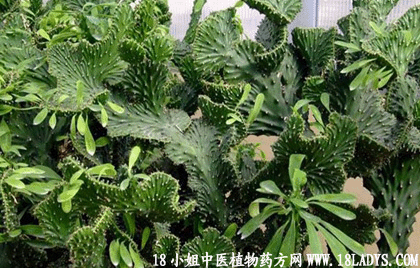

(本文解释权归中药材天地网兄弟站-中药大全-中医植物药方网所有,如需转载请注明出处)

大叶万年青(中药材植物名:粤万年青)(植物科:天南星科)
植物名：粤万年青。
生长环境：本品为多年生草本。华南山谷、湿地间有产，为栽培植物。
分布：我国南部、印度和马来西亚，广州广泛栽培。
入药部分：全株。
采集期：全年。
自采地点：家种。
性味：性寒凉、味淡、一说有毒。
功能：清凉解毒，利水通淋。
主治、用量和用法：1、小便刺痛，尿血：全株生用2株（不能多用）请水煎，加白糖水冲服；2、痈疮：全用全株，加片糖捣烂，敷换处、狗咬、毒虫咬伤：用法如上。
（方歌）通淋解毒万年青，溲血痛淋莫要惊，痈殇狗噬毒虫咬，捣烂添敷毒啜清。
参考资料：《本草纲目》及《拾遗》所载的万年青不是本品，广东常将本品插瓶，以供赏玩。